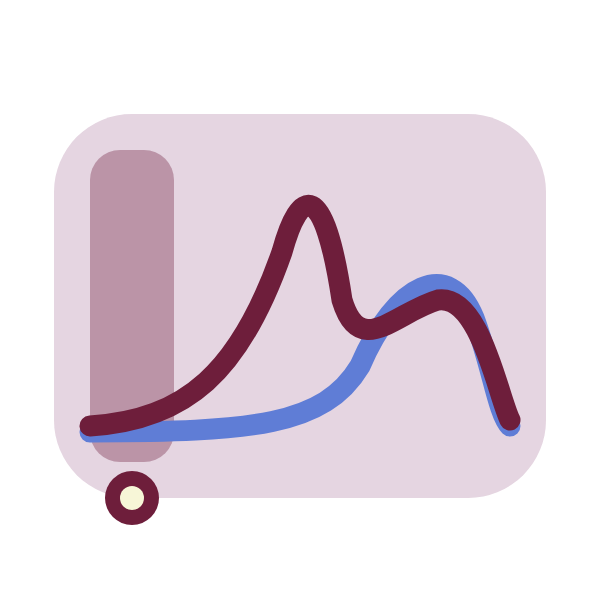
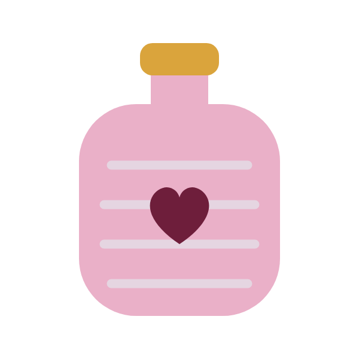
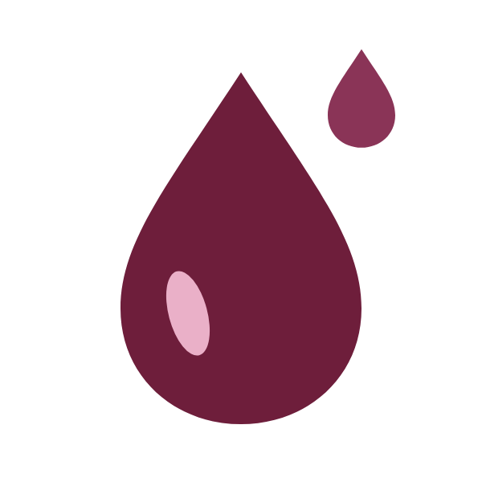

menstration phase
hormone status
Estrogen and progesterone are at their lowest. The uterine lining sheds, which can bring cramps and fatigue.



ENERGY NEEDED
Low. Favor rest, slow walks, stretching and gentle yoga. Listen to your body and slow down without guilt.
FOOD
Iron-rich foods (lentils, spinach, red meat, tofu) with vitamin C to absorb them.
Warm, comforting meals like soups and stews.
Omega-3s and a little dark chocolate for magnesium. Stay well hydrated.